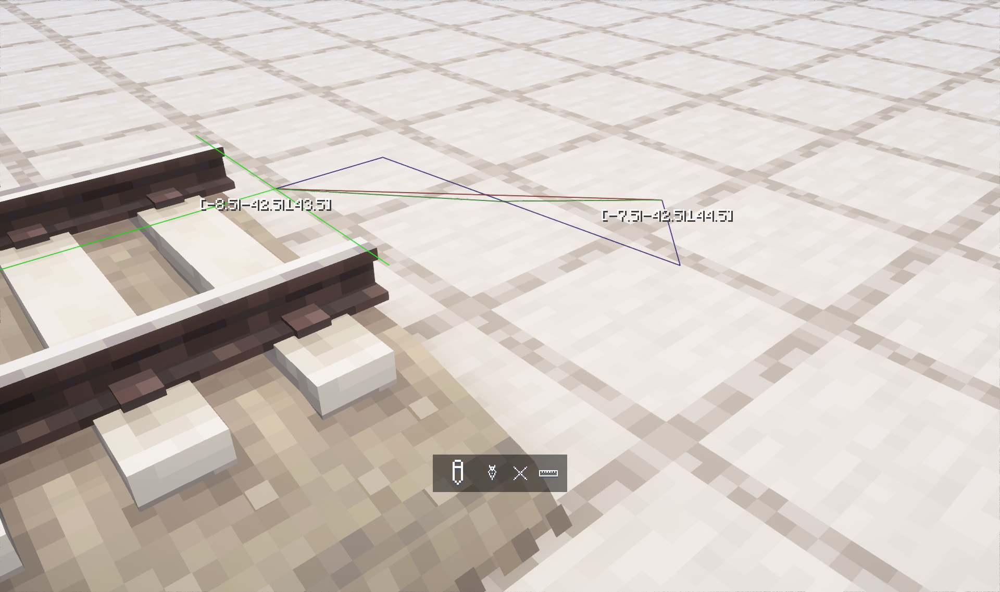
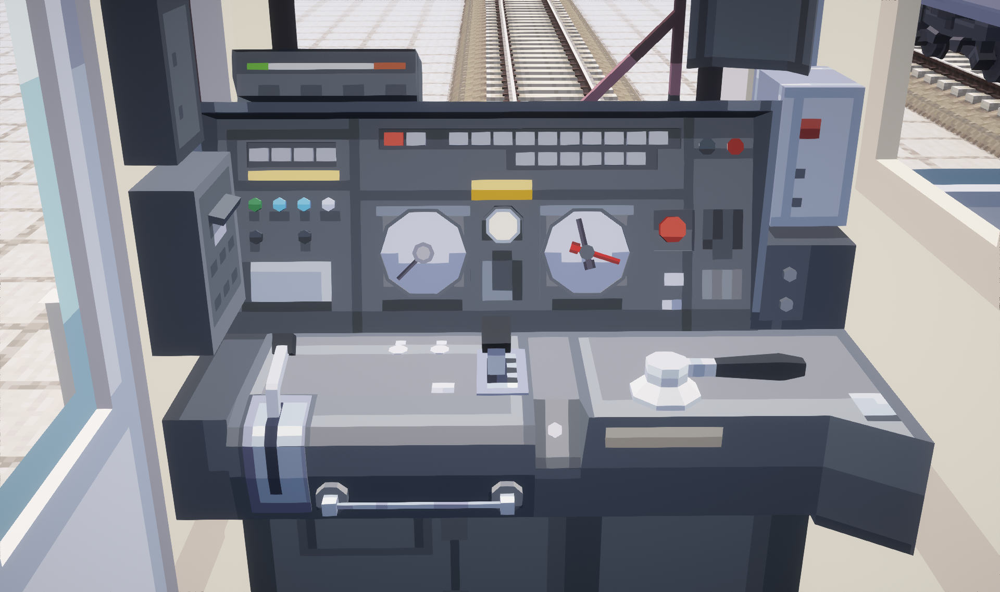
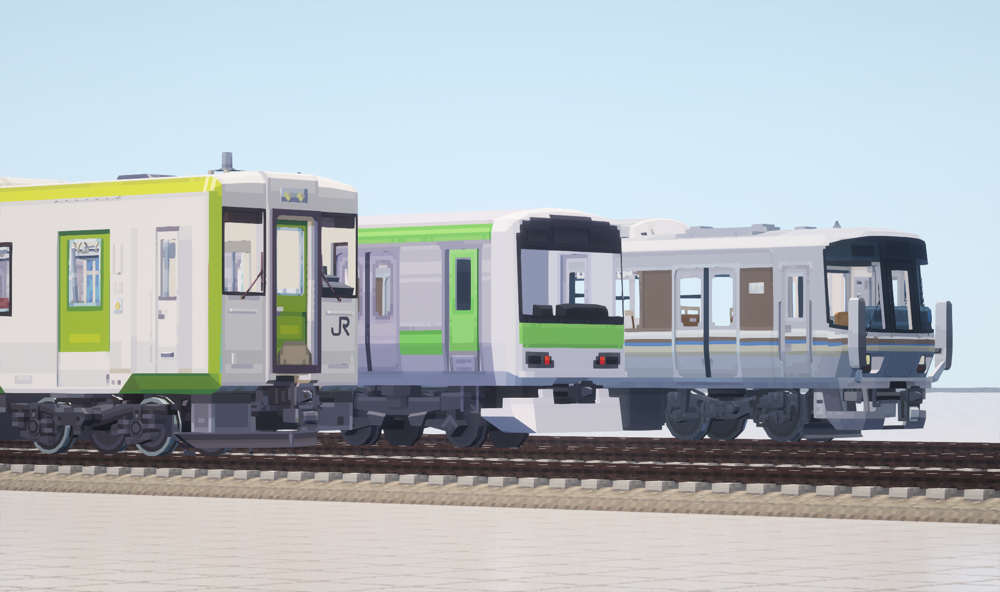
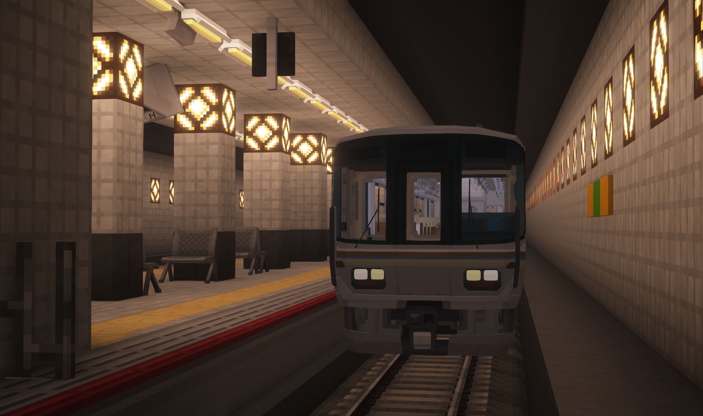
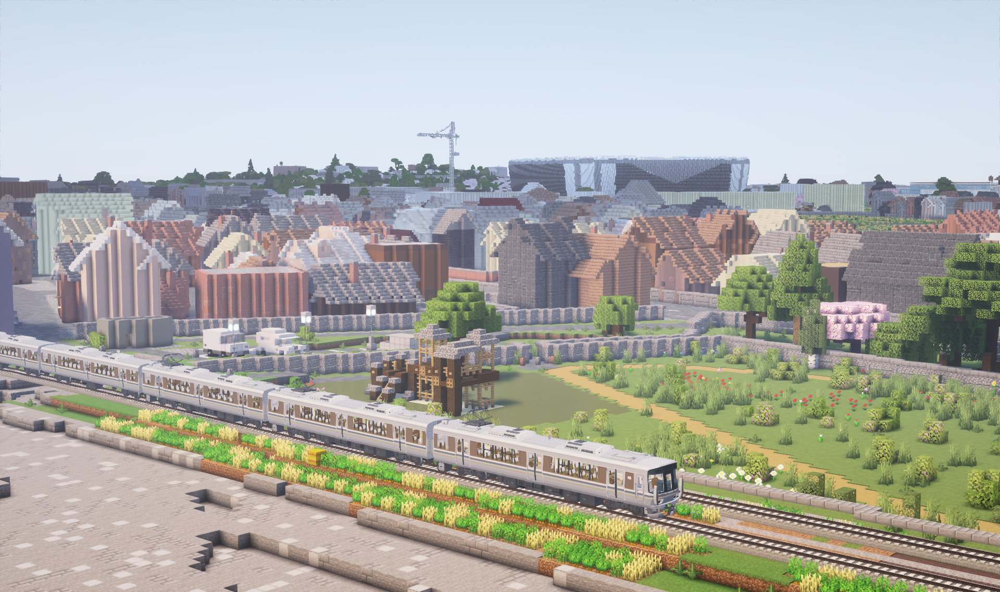

新时速 是你的另一款Minecraft铁路模组。

全新引擎
新时速拥有比现有的Minecraft铁路模组更加简洁方便的列车编组和轨道放置。

真实操作
新时速以知名铁路模拟游戏为样本设计交互，包含大量可动可操作部件，无论在单人模式还是多人联机都可以体验到真实驾驶的乐趣。

沉浸画风
新时速官方车包主张low-poly的设计语言，在保留更多原车操作细节的前提下，与Minecraft世界画风无缝契合，并节省更多系统资源。
即便在附近有多列长编组列车的情况下依然可以保持高帧率运行。

直通运行
Metropolis模组正在逐步脱离对MTR的依赖，并成为多平台的铁路装饰模组。新时速和Metropolis未来将会各自在车站管理和铁路引擎方面专注发展。
